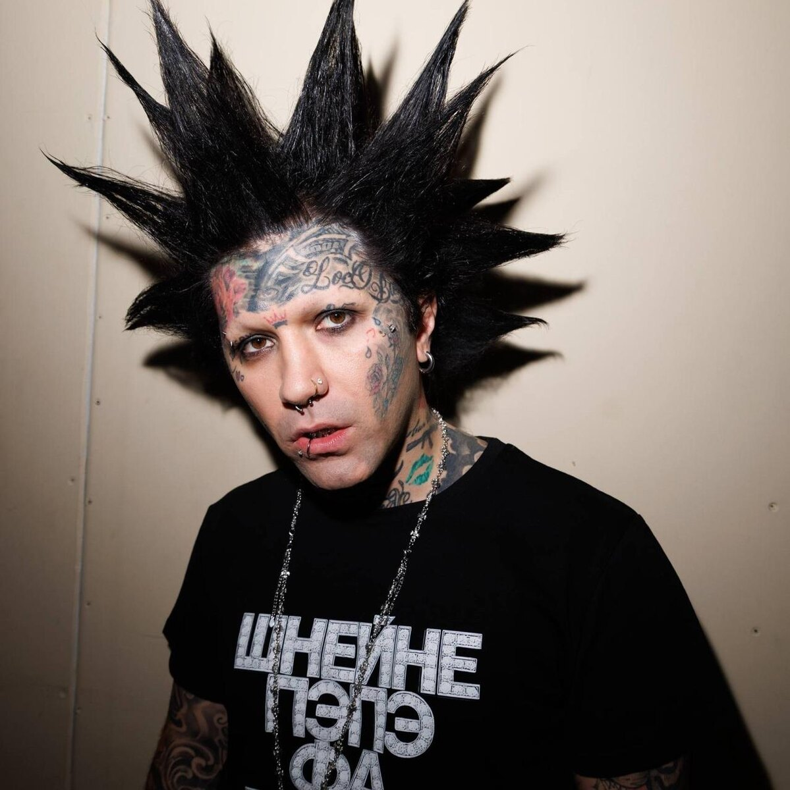

WTFA

Не пишите нам
«Шнейне» – это «Шанель», потому что это дизайн, мы на крутом, на богатом. «Пэпэ» – это папа и лягушонок Пепе. «Фа» – «да, хорошо, всё круто, всё четко». «Втфа» – это недовольство, «Что происходит?»